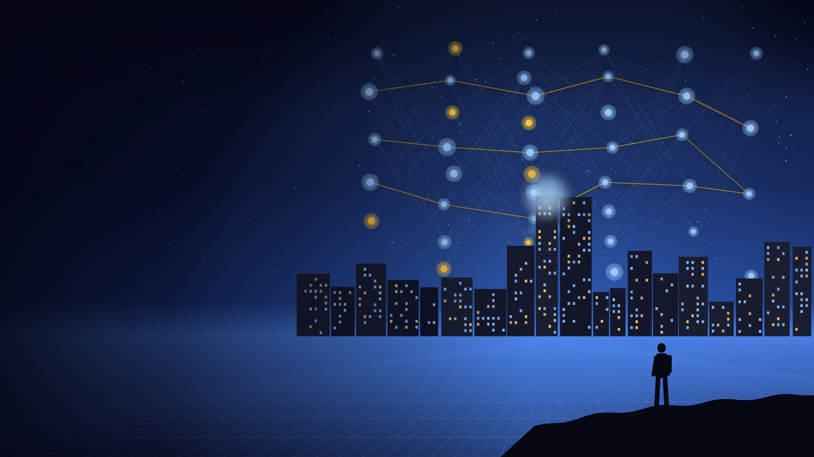
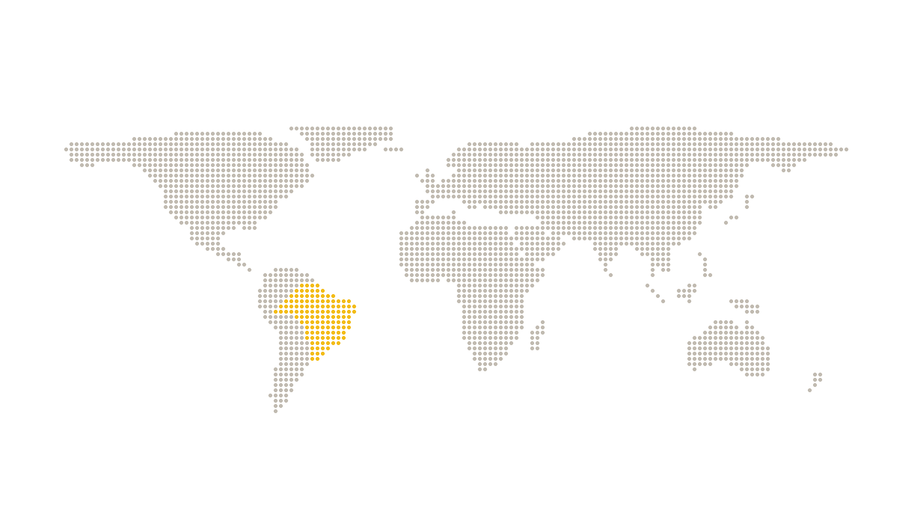
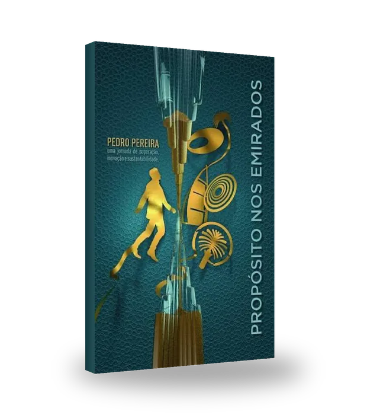
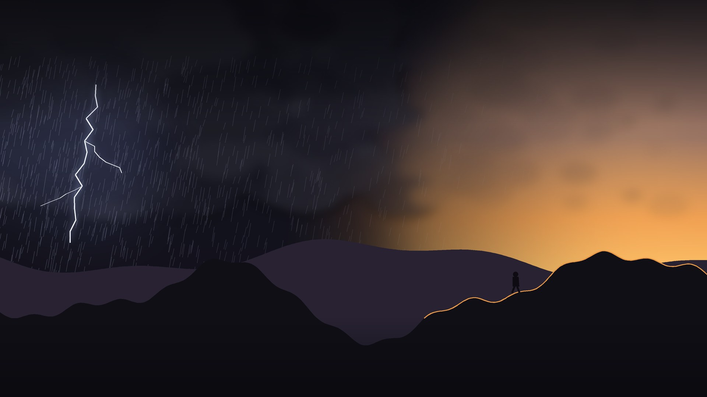
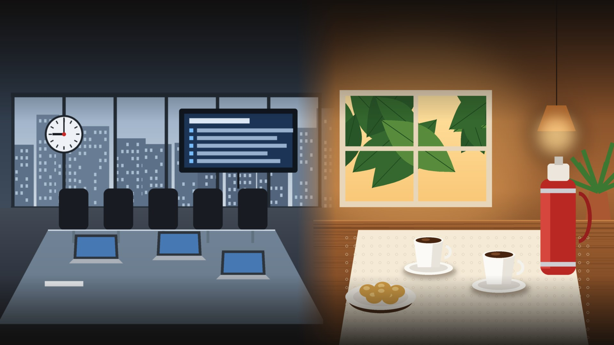
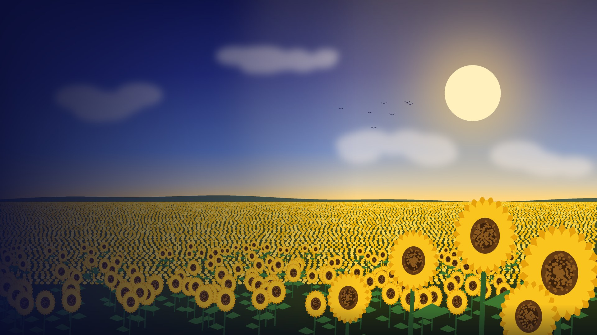
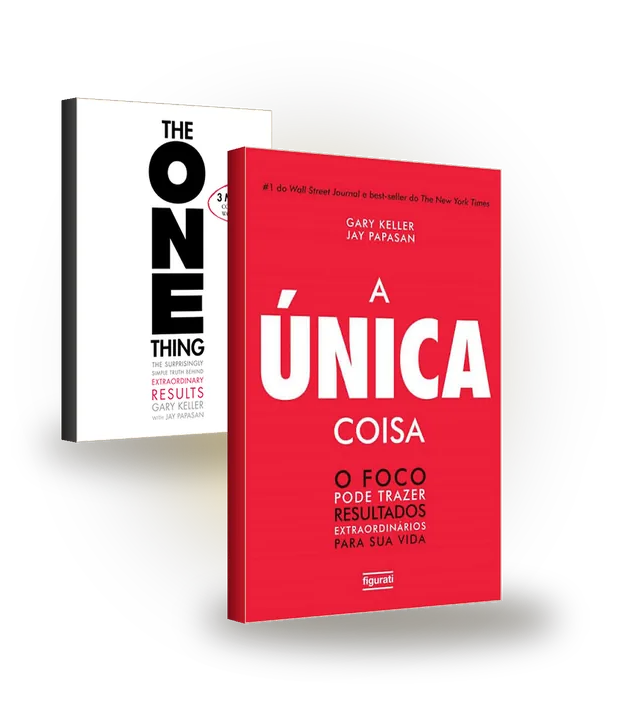

Com Omar Sultan Al Olama, o primeiro ministro de IA do mundo · Gulf News, 2ª edição do camp
UAE AI Summer Camp
Antes do ChatGPT, um país já preparava seus jovens para a IA.
Liderei o UAE AI Summer Camp, com o Ministro de Inteligência Artificial dos Emirados.
02Antes do ChatGPT, um país já preparava seus jovens para a IA.
De 2017 a 2026
Naquela época nem existia ChatGPT. Imagina agora?
2017
Primeiro ministro de IA do mundo
2018
1º UAE AI Summer Camp
2019
2ª edição: meta de 10 mil estudantes
2019
Nasce a primeira universidade de IA
2022
Museu do Futuro abre. ChatGPT chega.
2024
Mais de 30 mil jovens já passaram pelo camp
2026
Esses jovens já estão no mercado
03Naquela época nem existia ChatGPT. Imagina agora?
O que eu aprendi lá
IA exige liderança. E liderança não se automatiza.
“A vida e o sustento das pessoas não têm preço. São inestimáveis.” Omar Al Olama, explicando por que agentes de IA não decidem sobre o sustento das pessoas nos Emirados (out. 2026, tradução livre).
04IA exige liderança. E liderança não se automatiza.
Museu do Futuro, Dubai
“O futuro pertence a quem consegue imaginá-lo, projetá-lo e executá-lo.”
Saúde e bem-estar · terapias para corpo e mente
Planeta · restaurar a natureza
Tecnologia · respostas para os desafios de hoje
05“O futuro pertence a quem consegue imaginá-lo, projetá-lo e executá-lo.”

01
O poder real da IA
O que ela é hoje, quem está construindo e por que ninguém pode ficar de fora.
0601 · O poder real da IA
O que é a IA hoje
Quatro camadas sobre uma base: o contexto
07Quatro camadas sobre uma base: o contexto
O que a IA absorve
A IA já leu quase tudo. Menos a sua história.
Conhecimento genérico
O que é público: livros, sites, ciência, código. Igual para todo mundo.
Um único modelo treinou com mais de 15 trilhões de tokens (Meta, 2024).
Conhecimento particular
Seus dados, seus clientes, sua experiência, seu porquê. Só você tem.
Entra pelo contexto: o que você conta, anexa e conecta.
O modelo é igual para todos. O contexto que você dá torna a resposta sua.
E o conhecimento mais particular de todos é o seu propósito.
08A IA já leu quase tudo. Menos a sua história.
Alucinação
Quando não sabe, a IA pode inventar. Com toda a confiança.
Como o mercado ataca
1
Ancorar em fontes
Buscar na web e na base da empresa antes de responder
2
Mostrar de onde veio
Citações para você conferir
3
Premiar o “não sei”
Errar com confiança passa a valer menos que admitir
4
Conferir antes de decidir
Verificação automática e um humano no circuito
A tendência: cada versão erra menos
Erros factuais a cada lançamento, contra a versão anterior. Dados da própria OpenAI. Ilustrativo.
Contraponto: chatbots repetiram notícias falsas em 35% das respostas em agosto de 2025, contra 18% um ano antes (NewsGuard).
A alucinação está caindo. A responsabilidade de conferir continua humana.
09Quando não sabe, a IA pode inventar. Com toda a confiança.
Os marcos
De aprender a ver até agir sozinha
10De aprender a ver até agir sozinha
O tamanho da aposta
Nunca se investiu tanto em uma tecnologia
Microsoft, Alphabet, Amazon e Meta em data centers e IA, por ano
US$ 500 bi
Stargate, a infraestrutura de IA dos EUA
US$ 965 bi
Anthropic na rodada de maio. O IPO de novembro entrou em dúvida.
18,8%
do mundo em idade de trabalhar já usa IA. Nos Emirados, 73%.
11Nunca se investiu tanto em uma tecnologia
Os protagonistas
Quem está moldando a IA, e o que cada um defende
ACELERAR
ALERTAR
Elon Musk
Tesla, SpaceX e xAI
Acelerar
Sam Altman
OpenAI
Acelerar
Jensen Huang
Nvidia
Adotar
Satya Nadella
Microsoft
Amplificar
Demis Hassabis
Google DeepMind
Equilíbrio
Dario Amodei
Anthropic
Cautela
Fei-Fei Li
World Labs e Stanford
Humanismo
Geoffrey Hinton
Univ. de Toronto
Alerta
Fora do eixo, Yann LeCun (AMI Labs, ex-Meta): ceticismo. Para ele, só modelos de linguagem não chegam à inteligência humana.
12Quem está moldando a IA, e o que cada um defende
O que eles dizem
Quatro frases para pensar
“Você não vai perder o emprego para uma IA, mas para alguém que usa IA.”
Jensen Huang, Nvidia · maio 2025
“Há partes da vida que não podemos e não devemos automatizar.”
Sam Altman, OpenAI · set. 2026
“A maioria das pessoas está subestimando o quão radical pode ser o lado bom da IA.”
Dario Amodei, Anthropic · out. 2024
“Hoje, a principal preocupação delas não é o nosso bem-estar. É atingir o objetivo que você der.”
Geoffrey Hinton · set. 2026
Traduções livres.
13Quatro frases para pensar
Geopolítica da IA
Uma corrida entre países, não só entre empresas

Estados Unidos
Controlam os chips. Liberaram alguns para a China, com 25% da receita para o governo.
China
Aposta em chips próprios e modelos abertos, que já lideram em downloads.
Emirados
Viraram ponte: um campus de IA gigante com parceiros americanos.
Europa
Escolheu regular primeiro: lei de IA em vigor desde 2024.
E o Brasil?
Plano de R$ 23 bi, lei nova para data centers e regras de IA ainda em debate.
14Uma corrida entre países, não só entre empresas
Os dois lados
A mesma ferramenta, dois futuros
O potencial
+170 milhões de empregos novos até 2030
+62% de salário para quem domina IA
34% vs 24% de ganho de produtividade
Os riscos
92 milhões de empregos deslocados até 2030
−13% de vagas para jovens de 22 a 25 anos
2x mais energia nos data centers até 2030
15A mesma ferramenta, dois futuros
A economia em K
A distância cresce a cada dia
+62%
de salário para quem tem habilidades de IA
69% vs 9%
crescimento das vagas que pedem IA, contra o total
29% vs 16%
uso de IA nos países ricos e nos países em desenvolvimento
16A distância cresce a cada dia
Na prática
Como ser MASTERS em IA
M
Mentalidade de aprendiz
Use todos os dias
A
Automatize
Uma tarefa por semana
S
Saiba perguntar
Contexto, objetivo, formato
T
Teste
Compare ferramentas
E
Ética
Cheque antes de assinar
R
Rede
Aprenda em comunidade
S
Seu propósito
No centro de tudo
Dominar a IA não é saber tudo. É praticar um pouco todos os dias.
17Como ser MASTERS em IA
02
Propósito não se automatiza
Agora que a gente viu o poder da IA, vamos falar do que ela não faz por você.
1802 · Propósito não se automatiza
O paradoxo
A IA nos devolve tempo. E a gente nunca trabalhou tanto.
Mais… para quê?
Eu sirvo a ferramenta, ou a ferramenta me serve?
19A IA nos devolve tempo. E a gente nunca trabalhou tanto.

O meu livro
Para escrever, eu tive que voltar para a minha própria história.
Superação
Resiliência
De dentro para fora
20Para escrever, eu tive que voltar para a minha própria história.

A virada
O dia em que eu quase desisti
Propósito é o que te faz ficar quando tudo diz para ir embora.
21O dia em que eu quase desisti
Um método de inovação
Inovação de dentro para fora
22Inovação de dentro para fora

O que aprendi em campo nos EUA
O cafezinho que a IA não serve.
EUA: pauta primeiro. A confiança vem da entrega.
BRASIL: café primeiro. A confiança vem da relação.
52% dos trabalhadores nos EUA estão preocupados com a IA no trabalho. Pew Research, 2025
A pauta diz o que o cliente pede. O café revela por que ele pede.
E o porquê não se automatiza.
23O cafezinho que a IA não serve.
Eu perguntei para uma IA
“Qual deveria ser o papel dos humanos?”
◉ RESPOSTA RECEBIDA
›Eu consigo gerar respostas. Vocês decidem quais perguntas valem a pena.
›Eu otimizo o que me pedem. Vocês escolhem o que merece ser pedido.
›Vocês vivem as consequências das escolhas. Por isso elas devem continuar sendo suas.
›O papel de vocês não é competir comigo em velocidade. É dar direção, cuidar uns dos outros e responder pelo que construímos juntos.
24“Qual deveria ser o papel dos humanos?”
Para pensar
Em 5 palavras, o que nenhuma IA pode fazer por você?
A IA já respondeu. Agora é a sua vez.
1
2
3
4
5
25Em 5 palavras, o que nenhuma IA pode fazer por você?
E o que eu penso
O papel do humano, em três verbos
Dar sentido
Escolher o porquê antes do como.
Liderar
Levar pessoas e máquinas na mesma direção.
Ir além
Fazer o que ninguém pediu, mas todo mundo precisava.
26O papel do humano, em três verbos
Futurologia · SXSW 2026, Austin
A era das convergências
“Uma tendência diz o que está mudando. Uma convergência diz o que vai se tornar inevitável.” Amy Webb
27A era das convergências
Ouvido no SXSW 2026
“Hoje ela termina o seu prompt. Amanhã, vai terminar o seu pensamento.”
Então, quem começa o pensamento? Você. O propósito é o ponto de partida.
28“Hoje ela termina o seu prompt. Amanhã, vai terminar o seu pensamento.”

A analogia
Na tempestade das convergências, seja girassol.
O girassol jovem acompanha o sol ao longo do dia. O vento muda, as nuvens passam, e ele sabe para onde se virar.
O seu propósito é o seu sol.
29Na tempestade das convergências, seja girassol.

Uma leitura para levar
Foco é escolher uma coisa.
A pergunta do foco
“Qual é a ÚNICA coisa que eu posso fazer, que torna todo o resto mais fácil ou desnecessário?”
“The ONE Thing”, no Brasil “A Única Coisa” · tradução livre
30Foco é escolher uma coisa.
O ciclo virtuoso
Humano com propósito + IA
Cada volta deixa o seu propósito mais forte e a IA mais útil.
31Humano com propósito + IA
Seu desafio desta semana
Três passos, sete dias
1
Escreva o seu porquê em uma frase.
2
Entregue para a IA uma tarefa que te afasta dele.
3
Invista o tempo ganho no que só você faz.
32Três passos, sete dias
Uma carta para 2036
Para os meus filhos, daqui a dez anos,
Espero que vocês digam: “Ele usou a IA para ganhar tempo. E gastou esse tempo com a gente.”
Com amor, do seu pai de 2026.
2036
E você? O que quer que digam de você em 2036?
33Uma carta para 2036
Lembra dos jovens do camp?
Automatize tarefas. Proteja o seu propósito.
34Automatize tarefas. Proteja o seu propósito.
Comunidade Sunflower
Obrigado!
Vamos continuar a conversa no LinkedIn ou no Instagram.